A technical interlude: base factorial representation
An elementary exercise that one sometimes sees in sequences/series problems in texts is: prove that
n . n ! + ( n -1).( n -1)! + ... 3.3! + 2.2! +1.1! = ( n +1)! - 1 ... (1)
Someone whose bag of tricks consists only of the school ' turn it back to front ' (for adding arithmetic series) or
' multiply by r ' (for adding geometric series) is going to get stuck on this...
Here the obvious solution is dictated by thinking about a particular case of (1), and then seeing ... . Suppose, say, that n is 3, then the LHS of (1) is (3.3! + 2.2! + 1.1!), namely (18+4+1), which is 23. And the RHS of (i) is (4! - 1), which is also 23. Now (with 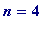 ) if one adds to '23' - which is both (3.3! + 2.2! + 1.1!) and (4! - 1) - one obtains
4.4! + (3.3! + 2.2! + 1.1!) = 4.4! + (4! - 1) = (4+1).4! - 1 = 5.4! - 1 = 5! - 1
The simple point is that k . k ! + k ! = ( k +1). k ! = ( k + 1)!, and thus a proof of (1) may be given 'by induction'.
Alternatively just see what happens when one adds '1 (=1!)' to the LHS of (1):
n . n ! + ( n -1).( n -1)! + ... 3.3! + 2.2! + (1.1! + 1!)
= n . n ! + ( n -1).( n -1)! + ... 3.3! + 2.2! + 2!
= n . n ! + ( n -1).( n -1)! + ... 3.3! + 3!
= n . n ! + ( n -1).( n -1)! + ... 4!
= ... = n . n ! + ( n )! = ( n +1). n ! = ( n +1)!
and subtracting '1' gives
n . n ! + ( n -1).( n -1)! + ... 3.3! + 2.2! +1.1! = ( n + 1)! - 1
Remark . (1) should simply be seen as being the ' base factorial ' equivalent of what happens in the base 10 system (or indeed any polynomial base system) with examples like 999 + 1 = 1000 (i.e. 999 = 1000 - 1), or 9999 + 1 = 10000 (i.e. 9999 = 10000 - 1) (in binary base: 1111 + 1 = 10000 (i.e. 1111 = 10000 - 1)), because every non-negative integer n may be represented ( uniquely ) by
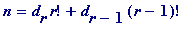 + ... + 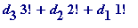 (= ( 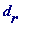 , 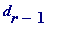 , ... , 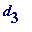 , 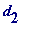 , 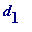 ))
where the digits , , ... , 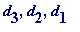 satisfy and .
MK, in his article, writes the digits the other way round, but I believe the above is more natural, and is the convention followed by D. E. Knuth in his classic Seminumerical Algorithms, Vol. 2, The Art of Computer Programming .
Examples . The integers 0, 1, 2, ... , 23 (= 4!-1) have the following base factorial representations:
0 = (0, 0, 0), 1 = (0, 0, 1), 2 = (0, 1, 0), 3 = (0, 1, 1), 4 = (0, 2, 0), ... , 22 = (3, 2, 0), 23 = (3, 2, 1)
Of course (e.g.) '3' is just (1, 1), but I have written it as (0, 1, 1) because I wanted to have it appear as a triple, with '23' - the extreme triple - in mind. Maple doesn't appear to have a command for converting an integer to base factorial (trying Maple's '?factorial' and '?base' produced no related topic), so I have written a simple Maple procedure for finding such representations, which I will call 'facKn' (Kn, for Knuth, with the dominant digits left to right, as in the normal decimal or general polynomial base):
>
facKn := proc(n) local j, r, d, N, k;
if n=0 then print(0=[0][fKn])
else for j while j! <= n do od: r := j-1:
d[r] := iquo(n, r!);
N[r] := n - d[r]*r!;
for k from r-1 by -1 to 1 do
d[k] := iquo(N[k+1], k!);
N[k] := N[k+1] - d[k]*k!;
od;
print(n=[seq(d[r+1-k], k=1..r)][fKn]);
fi; end:
> facKn(0);
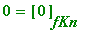
> facKn(1);
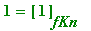
> facKn(2);
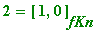
> facKn(3);
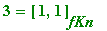
> facKn(4);
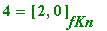
> facKn(20!-1);
> facKn(123454321);
>
A helping hand (not aimed at my students!!). If you are not familiar with programming then the above may not make much sense, but if you are then the thinking behind it is obvious; it is simply based upon extending a simple example like: convert 63 (say) to base factorial.
Roughwork . 4! = 24, 5! = 120, and so 63 lies between 4! and 5!. Thus 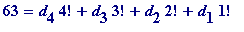 .
is the quotient when 63 is divided by 4!
and so is ' 2 '. Then setting 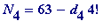 = 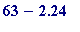 = 15
Then
 is obtained by finding the quotient when
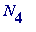
(=
) - namely 15 - is divided by 3! (so the quotient is
2
, since 15 =
2
.3! + 3, and one then forms
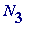
by subtracting
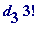
from
is obtained by finding the quotient when
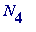
(=
) - namely 15 - is divided by 3! (so the quotient is
2
, since 15 =
2
.3! + 3, and one then forms
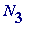
by subtracting
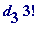
from
 , etc. One will eventually obtain: 63 =
2
.4! +
2
.3! +
1
.2! +
1
.1!.
, etc. One will eventually obtain: 63 =
2
.4! +
2
.3! +
1
.2! +
1
.1!.
There are some other elements (while, r:=j-1, etc) that would need explanation for a pure beginner, and I would recommend such a person to consult some of my 1st year Maple material. Here are the continued details for the example n = 63, but not written as a procedure (the above facKn is a procedure)
>
n := 63: for j while j! <= n do od: r := j-1:
d[r] := iquo(n, r!): N[r] := n - d[r]*r!:
for k from r-1 by -1 to 1 do
d[k] := iquo(N[k+1], k!): N[k] := N[k+1] - d[k]*k!: od:
print(63=[seq(d[r+1-k], k=1..r)][basefactorial]);
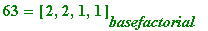
>
Now to return to the